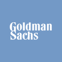

Manfredi Investment
Research & Markets
Equity Research · Informe Institucional
Datos al 3T 2026 (cierre 30 sep 2026, publicado 13 oct 2026)
Datos al 3T 2026 (cierre 30 sep 2026, publicado 13 oct 2026)

GSNYSE · The Goldman Sachs Group, Inc.Cifras fundamentales: comunicado y presentación de resultados del 3T 2026 (8-K del 13-oct-2026) y 10-Q del trimestre cerrado el 30 de septiembre de 2026, presentado ante la SEC el 2 de noviembre de 2026 (capital y RWA definitivos del 10-Q, no las estimaciones preliminares del 8-K). TTM = 4T25 a 3T26. Precio de mercado: cierre del 6-nov-2026 (Yahoo Finance, sin ajustar). Este documento es 100% analítico — no constituye una recomendación de compra, venta ni mantenimiento. Ver disclosure completo al pie.
01 — Resumen Ejecutivo
El 3T 2026 de Goldman Sachs fue el segundo mejor trimestre de su historia por ingresos ($18.679 millones, +23% interanual) y confirmó lo que el informe de septiembre advertía: el récord de junio ($20.338 millones, ROTCE de 25.5%) no era el nuevo nivel de crucero. Global Banking & Markets (GBM) bajó 13% contra el trimestre anterior pero creció 32% contra el 3T25, a $13.458 millones: Equities sumó $6.441 millones (+72%), las comisiones de banca de inversión $3.224 millones (+21%) y FICC $3.471 millones (−1%). Asset & Wealth Management (AWM) creció 14% a $5.051 millones con comisiones de gestión récord ($3.587 millones, +22%), y Platform Solutions —el negocio de consumo que queda, básicamente Apple Card— cayó 72% a $170 millones por nuevas pérdidas de valuación sobre la cartera de tarjetas en venta. La utilidad neta fue de $5.294 millones y el EPS diluido de $17.01 (+39%); sin la donación acelerada de ~$450 millones a Goldman Sachs Gives, el EPS habría sido ~$1.00 más alto.
Medido con las tres ventanas que importan para un negocio de ingresos volátiles, el ROTCE fue de 20.5% en el trimestre, 22.4% anualizado en los nueve meses y 21.1% en los últimos doce meses (ROE: 18.7%, 20.7% y 19.5%). Las tres están muy por encima de la meta de ciclo que la propia compañía publica en el 10-Q (ROE de 14%-16%, ROTCE de 15%-17%) y de lo que Goldman entregó en 2023 (8.1%), 2024 (13.5%) y 2025 (16.0%). Esa distancia es el centro de este informe: la valuación intrínseca (Sección 13) se ancla en un ROTCE normalizado de ciclo de 16%, no en el de 2026.
Lo que sí cambió fuerte desde septiembre es el precio. La acción pasó de $1,029.18 (11-sep-2026) a $865.82 (6-nov-2026), −15.9%, y el múltiplo sobre valor libro tangible bajó de ~3.0x a 2.54x. Con eso, el ROTCE que el precio exige de forma sostenida bajó de ~27.7% a ~23.5%: todavía por encima de cualquier año completo salvo 2021, pero ya cerca del ritmo de 2026. El blend ponderado de los seis métodos baja de $836.60 a $791.96 (−5.3%), sobre todo por el consenso (el precio objetivo promedio cayó de $1,142 a $1,031) y por los comparables (Morgan Stanley también se abarató). Con el precio más bajo, la brecha pasa de −18.7% a −8.5%. La postura queda en neutral con sesgo cauteloso: el negocio está mejor de lo que estaba hace un año, pero el precio todavía paga un nivel de rentabilidad que Goldman no sostuvo nunca a lo largo de un ciclo.
Correcciones respecto de la versión de septiembre: (1) el valor libro tangible por acción ahora es el oficial de la compañía ($336.61 al 2T26 y $341.43 al 3T26), no el propio sobre acciones en circulación ($344.68); (2) Apple Card no está "transferido": Goldman firmó en diciembre de 2025 el acuerdo para pasar el programa a JPMorgan Chase y la transición lleva unos 24 meses, así que la cartera ($19.904 millones al 30-sep) sigue en el balance de Goldman como "mantenida para la venta"; (3) el ROTCE oficial del 1T26 fue 21.3% (no 27.1%) y el de 2025 fue 16.0% (no 15.9%); (4) la provisión de los doce meses a junio era negativa (−$1.367 millones), no $1.043 millones, por la liberación de reservas de $2.123 millones del 4T25; (5) Goldman sí publica el retorno sobre capital de cada segmento (Sección 03).
02 — Historia y Evolución
Goldman Sachs fue fundada en 1869 por Marcus Goldman como una casa de descuento de pagarés comerciales en Nueva York y pasó gran parte de su primer siglo como sociedad privada (partnership) de banca de inversión, la estructura que definió su cultura mucho después de dejar de serlo. Salió a bolsa en mayo de 1999. La crisis de 2008 fue el segundo quiebre: para acceder a la ventanilla de descuento de la Reserva Federal, Goldman se convirtió en septiembre de ese año en una sociedad holding bancaria (bank holding company), el mismo estatus regulatorio que JPMorgan o Bank of America. Esa conversión es la razón por la que Goldman tiene depósitos, capital regulatorio bajo la Fed y un ratio CET1 que reportar (Sección 06).
Entre 2016 y 2023 Goldman intentó diversificarse hacia la banca de consumo: Marcus (préstamos personales y cuentas de ahorro, 2016), la tarjeta Apple Card como emisor exclusivo (2019) y la compra de GreenSky (2021). El experimento acumuló pérdidas y cargos que hundieron el ROTCE a 8.1% en 2023 y forzó la retirada: venta de GreenSky (2023), venta de la tarjeta de General Motors a Barclays (2024) y, en diciembre de 2025, el acuerdo para transferir Apple Card a JPMorgan Chase. La transición todavía está en curso (Sección 04): la salida del consumo está decidida y reservada, pero no terminada.
Utilidad neta anual reportada, FY2021–FY2025, y TTM al 30-sep-2026 (4T25 a 3T26), en miles de millones de USD. Fuente: 10-K y comunicados de resultados de Goldman Sachs.
La serie resume la historia: 2021 ($21.635 millones) fue el pico de la era de estímulo y del boom de SPACs; 2022 ($11.261 millones) y 2023 ($8.516 millones) cargaron el costo de la retirada del consumo; 2024 ($14.276 millones) y 2025 ($17.176 millones) marcan la recuperación, y los doce meses a septiembre de 2026 ($22.169 millones) ya superan a cualquier año de la serie. El ROTCE anual oficial sigue la misma forma: 24.3% (2021), 11.0% (2022), 8.1% (2023), 13.5% (2024) y 16.0% (2025). A diferencia de JPMorgan, que sostuvo un piso de 17%-20% durante tres años completos, Goldman nunca encadenó dos años por encima de 17% — por eso este informe no usa el ritmo de 2026 como nivel "sostenible" (Sección 13).
03 — Modelo de Negocio y Segmentos
Goldman opera con tres segmentos: Global Banking & Markets (GBM) —banca de inversión (asesoría en fusiones, colocaciones de acciones y de deuda), FICC (renta fija, monedas y commodities) y Equities (intermediación y financiamiento de acciones)—, Asset & Wealth Management (AWM) —gestión de activos institucional y de terceros, banca privada y préstamos a clientes de alto patrimonio, e inversiones de balance— y Platform Solutions —al 30-sep-2026, casi exclusivamente Apple Card—. No es un banco de depósitos: sus $568.000 millones de depósitos son 26% de $2.182 billones de activos, y el negocio vive de comisiones y de intermediar mercados, no del margen de interés. El ingreso neto por intereses fue de $3.770 millones en el trimestre, 20% del total.
| Segmento | Ingresos 3T26 | % del total | Var. vs 3T25 | Margen pretax | ROE del segmento |
|---|---|---|---|---|---|
| Global Banking & Markets | $13.458M | 72.0% | +32% | 43.0% | 20.7% |
| Asset & Wealth Management | $5.051M | 27.0% | +14% | 26.1% | 16.1% |
| Platform Solutions | $170M | 0.9% | −72% | pérdida ($95M) | −9.2% |
| Total firma | $18.679M | 100% | +23% | 37.5% | 18.7% |
Fuente: 10-Q del 3T26 y presentación de resultados (13-oct-2026). Margen pretax = utilidad antes de impuestos del segmento / ingresos netos del segmento. ROE del segmento = utilidad a comunes anualizada / patrimonio común promedio asignado (GBM $81.485M, AWM $24.427M, Platform Solutions $3.468M), cifra publicada por la compañía. En nueve meses: GBM 23.5%, AWM 14.4%.
Ingresos netos por segmento, 3T 2026, en miles de millones de USD. GBM concentra 72% de la firma.
| Línea (millones de USD) | 3T26 | 2T26 | 3T25 | vs 3T25 | 9M26 vs 9M25 |
|---|---|---|---|---|---|
| Asesoría (M&A) | 1,654 | 1,378 | 1,404 | +18% | +34% |
| Colocación de acciones (ECM) | 666 | 985 | 465 | +43% | +73% |
| Colocación de deuda (DCM) | 904 | 1,032 | 788 | +15% | +29% |
| Comisiones de banca de inversión | 3,224 | 3,395 | 2,657 | +21% | +40% |
| FICC (intermediación + financiamiento) | 3,471 | 4,592 | 3,493 | −1% | +6% |
| Equities (intermediación + financiamiento) | 6,441 | 7,416 | 3,736 | +72% | +57% |
| Otros | 322 | 117 | 282 | +14% | +57% |
| Total GBM | 13,458 | 15,520 | 10,168 | +32% | +34% |
Fuente: comunicado de resultados del 3T26 (8-K del 13-oct-2026). Ranking: Dealogic, 1-ene a 30-sep-2026, citado en la presentación de resultados.
Dentro de GBM conviene separar lo recurrente de lo que depende del pulso del mercado. Equities financing —préstamos con margen y financiamiento de carteras a fondos— marcó un récord de $3.365 millones (+96%) y es la parte más estable de la mesa: crece con los saldos que los clientes financian, no con la volatilidad del día. Equities intermediation ($3.076 millones, +52%) y FICC intermediation ($2.264 millones, −7%, con hipotecas, crédito y tasas en baja) son las más cíclicas. En banca de inversión, Goldman fue primero en fusiones anunciadas y completadas y en colocaciones de acciones, segundo en préstamos apalancados y tercero en deuda de alto rendimiento en lo que va de 2026; según David Solomon, con una ventaja de ~$430.000 millones en volumen de M&A sobre el segundo. La señal de cautela es el backlog: la compañía informa que bajó contra junio (menos asesorías potenciales) y quedó levemente debajo del cierre de 2025, aunque el management lo describe como "muy robusto" y recordó que había entrado al trimestre con el backlog más alto en cinco años.
Las comisiones de gestión y otras ($3.587 millones, +22%, récord) y banca privada y préstamos ($827 millones) sumaron 87% de los ingresos de AWM en el trimestre (89% en nueve meses); las ganancias de inversiones de balance fueron apenas $50 millones (1%), con pérdidas de valuación en deuda. Es el cambio de mezcla que Goldman persigue desde 2020: menos dependencia de marcar a mercado su propio balance de inversiones principales y más comisiones sobre activos de terceros. Las inversiones alternativas en balance siguen bajando —de $26.900 millones al cierre de 2025 a $25.900 millones en junio y $24.300 millones en septiembre—, mientras las comisiones de incentivo ($587 millones, por distribuciones de fondos) y la captación de alternativos ($122.000 millones en nueve meses; la gerencia subió la expectativa del año a ~$150.000 millones) toman su lugar. Los activos bajo supervisión (AUS) llegaron a un récord de $4.10 billones (+$56.000 millones en el trimestre), con $97.000 millones de entradas netas de largo plazo —el trigésimo quinto trimestre seguido con entradas— y $27.000 millones de depreciación de mercado. El ROE del segmento fue de 16.1% en el trimestre y 14.4% en nueve meses, todavía por debajo de la meta de mediano plazo de "high-teens" con margen pretax de ~30% (26.1% en el trimestre, 24% en nueve meses). En el trimestre Goldman anunció dos compras más en el segmento: NEOS Investments (ETFs de ingreso) y LCN Capital Partners (sale-leaseback inmobiliario).
04 — Desarrollos Recientes y Perspectiva
En diciembre de 2025 Goldman firmó el acuerdo para transferir el programa Apple Card a otro emisor (JPMorgan Chase, que constituyó del otro lado una reserva de $2.200 millones; ver informe JPM) y pasó la cartera a la categoría "mantenida para la venta". Esa reclasificación liberó reservas: la provisión del 4T25 fue negativa en $2.123 millones, un beneficio contable que no se repite. Desde entonces, la cartera se lleva al menor entre costo y valor razonable, y cada trimestre absorbe pérdidas de valuación: por eso Platform Solutions perdió $95 millones antes de impuestos en el 3T26 y sus ingresos cayeron 72%. Según el 10-Q, la transición se completaría en unos 24 meses desde la firma del acuerdo; al 30-sep-2026 la cartera de tarjetas en venta era de $19.904 millones (contra $19.742 millones a fin de 2025). El trimestre no tuvo cargos de reservas por tarjetas —ya no hay reserva CECL sobre esa cartera— y la provisión de $368 millones fue por deterioros de préstamos mayoristas. El costo de salida es acotado (Platform Solutions perdió $54 millones netos en nueve meses), pero no está terminado.
Goldman cerró Industry Ventures (capital de riesgo secundario, enero de 2026, ~$815 millones de contraprestación entre efectivo, acciones y pago contingente) e Innovator Capital Management (ETFs de resultado definido, abril de 2026, ~$1.900 millones) y anunció NEOS y LCN en el 3T26. El efecto en el balance es directo: goodwill e intangibles pasaron de $6.791 millones a fin de 2025 a $9.224 millones al 30-sep-2026, capital que deja de ser tangible y que explica por qué el valor libro tangible por acción subió solo 1.8% en nueve meses (de $335.49 a $341.43) con un ROTCE de 22.4%.
En la llamada, Solomon citó la venta de Hugging Face a Nvidia (~$13.000 millones) y de Integer Holdings a KKR (~$6.000 millones) como prueba de que los clientes siguen operando, y evitó decir si la actividad de mercados de capitales tocó techo; reconoció que algunas salidas a bolsa de septiembre se postergaron por diferencias de valuación. Los procesos de OpenAI —que presentó su S-1 confidencial en mayo de 2026 con Goldman, Morgan Stanley y JPMorgan como colocadores líderes— y de Anthropic —con Goldman y Morgan Stanley como bancos principales— no se concretaron a la fecha de corte de este informe: la ventana de septiembre que se manejaba no se cumplió y no hay fecha pública. Siguen siendo upside de comisiones no incorporado en el modelo (Sección 11), pero ya no un evento inminente.
Los activos ponderados por riesgo (RWA, estándar) subieron de $727.338 millones a fin de 2025 a $815.793 millones en septiembre (+12%), por más riesgo de mercado y de crédito, y el CET1 bajó de 14.3% a 12.4%. El CFO Denis Coleman dijo que el CET1 está "100 puntos básicos por encima del requerimiento de 11.4%" y Solomon recordó que la firma opera con un colchón de 50 a 100 puntos básicos: Goldman está en el borde de su rango. Las recompras bajaron de $5.000 millones en el 1T26 a $4.000 millones en el 2T26 y $3.000 millones en el 3T26, y el management dijo que la prioridad es "desplegar capital en el negocio" (Sección 07).
05 — Estados Financieros
| Métrica | 4T25 | 1T26 | 2T26 | 3T26 | TTM |
|---|---|---|---|---|---|
| Ingresos netos | $13.454M | $17.227M | $20.338M | $18.679M | $69.698M |
| Gastos operativos | $9.722M | $10.426M | $11.673M | $11.308M | $43.129M |
| Eficiencia ratio (más bajo = mejor) | 72.3% | 60.5% | 57.4% | 60.5% | 61.9% |
| Compensación y beneficios | $4.665M | $5.412M | $6.104M | $5.122M | $21.303M |
| Provisión para pérdidas de crédito | ($2.123M) | $315M | $102M | $368M | ($1.338M) |
| Utilidad neta | $4.617M | $5.630M | $6.628M | $5.294M | $22.169M |
| EPS diluido | $14.01 | $17.55 | $20.98 | $17.01 | $69.55 |
| ROE anualizado | 16.0% | 19.8% | 23.5% | 18.7% | 19.5% |
| ROTCE anualizado | 17.1% | 21.3% | 25.5% | 20.5% | 21.1% |
Fuente: comunicados y presentaciones de resultados 4T25, 1T26, 2T26 y 3T26; 10-Q del 3T26. ROE y ROTCE trimestrales y eficiencia trimestral: cifras de la compañía. TTM = suma de los cuatro trimestres; ROE y ROTCE TTM = utilidad a comunes de los cuatro trimestres ($21.308M) sobre el promedio del patrimonio común (y común tangible) promedio de cada trimestre, cálculo propio. Nueve meses de 2026 (oficial): ROE 20.7%, ROTCE 22.4%, eficiencia 59.4%. Año 2025 (oficial): ROE 15.0%, ROTCE 16.0%, eficiencia 64.4%. La provisión del 4T25 es negativa por la liberación de reservas al pasar Apple Card a "mantenida para la venta". Compensación del 4T25 = año 2025 ($18.906M) menos nueve meses ($14.241M).
ROTCE y ROE anualizados por trimestre, 3T25–3T26 (cifras de la compañía). La meta de ciclo de Goldman es un ROTCE de 15%-17%; el 3T26 (20.5%) volvió debajo del pico de junio sin caer a la meta.
Las tres ventanas cuentan lo mismo con distinta intensidad: el trimestre (20.5%) muestra la normalización después del pico de junio; los nueve meses (22.4%) y los doce meses (21.1%) todavía cargan ese pico. Ninguna sirve como estimación de largo plazo para un negocio donde el 72% de los ingresos depende del ciclo de mercados de capitales: el promedio oficial 2021-2025 fue de 14.6% (16.2% sin 2023, el año de los cargos del consumo) y la propia meta de la compañía es 15%-17% a lo largo del ciclo.
La eficiencia de nueve meses (59.4%, contra 62.1% un año antes) quedó en línea con la meta de ~60% que Goldman fijó en enero de 2026. El trimestre (60.5%) llevó dos cargas fuera de lo normal: los gastos transaccionales subieron 54% con el volumen de Equities y la donación a Goldman Sachs Gives sumó ~$450 millones. La compensación fue de $5.122 millones, 27.4% de los ingresos del trimestre; la relación que sigue la compañía —compensación sobre ingresos netos de provisión— bajó a 30.0% en nueve meses (31.0% en el semestre, 32.5% en los nueve meses de 2025). Como en un banco de inversión la compensación variable acompaña a los ingresos, la eficiencia de Goldman es más volátil que la de un banco comercial: el 4T25, con ingresos débiles, llegó a 72.3%.
Ingresos netos trimestrales, 2T25–3T26, en miles de millones de USD.
Eficiencia ratio trimestral (gastos operativos / ingresos netos, cifra de la compañía), 2T25–3T26. Más bajo es mejor; la meta de la compañía es ~60%.
06 — Balance, Calidad de Activos y Capital Regulatorio
| Métrica (al 30-sep-2026) | Valor |
|---|---|
| Activos totales | $2.182 billones |
| Depósitos | $568.000M |
| Préstamos (neto) | $275.645M |
| Patrimonio total / común | $124.929M / $110.151M |
| Goodwill + intangibles | $9.224M |
| Valor libro por acción (BVPS) | $372.64 |
| Valor libro tangible por acción (TBVPS) | $341.43 |
Fuente: 10-Q del 3T26 (balance, Nota 9 de préstamos, conciliación de patrimonio tangible) y presentación de resultados. BVPS y TBVPS son cifras oficiales de la compañía, calculadas sobre 295.6 millones de "basic shares" (acciones en circulación más unidades restringidas sin condiciones pendientes). TBVPS: $335.49 (4T25), $336.28 (1T26), $336.61 (2T26), $341.43 (3T26).
Los $568.000 millones de depósitos se reparten entre consumo ($230.000 millones, mayormente Marcus), banca privada ($105.000 millones), banca transaccional ($93.000 millones), certificados intermediados ($52.000 millones), programas de barrido ($42.000 millones) y otros ($46.000 millones). Los préstamos crecieron a $277.955 millones brutos (+16% en nueve meses), con 85% garantizados: "otros garantizados" (financiamiento a fondos y estructuras) $112.573 millones, inmobiliarios comerciales $42.128 millones, residenciales $37.909 millones, corporativos $39.087 millones, con garantía de títulos $21.937 millones y tarjetas (en venta) $19.904 millones. Los castigos netos (net charge-offs) del trimestre fueron $154 millones, una tasa anualizada de 0.3%; la provisión de $368 millones superó a los castigos y llevó la reserva total a $3.110 millones ($2.310 millones sobre préstamos, 0.9% de la cartera a costo amortizado). La provisión mayor que los castigos es una suba de reservas por deterioros puntuales de préstamos mayoristas y por crecimiento de la cartera, no un deterioro general: los castigos siguen bajos. Lo distinto es la comparación con 2025, cuando la provisión incluía tarjetas.
| Concepto (al 30-sep-2026, 10-Q) | Estándar | Avanzado |
|---|---|---|
| CET1 / RWA | $101.441M / $815.793M | $101.441M / $746.474M |
| CET1 ratio | 12.4% | 13.6% |
| Mínimo 4.5% + SCB 3.4% (estándar) o colchón fijo 2.5% (avanzado) + recargo G-SIB 3.5% | 11.4% | 10.5% |
| Colchón sobre el requerimiento | 1.0 punto (~$8.400M) | 3.1 puntos |
| Tier 1 / capital total | 14.2% / 16.2% | 15.5% / 17.4% |
| Apalancamiento suplementario (SLR) / requerimiento | 4.3% / 3.75% | |
Fuente: 10-Q del 3T26, Nota 20 (cifras definitivas; el 8-K del 13-oct había informado RWA estándar preliminares de $817.000M). CET1 al cierre de 2025: 14.3% estándar, 15.1% avanzado. El recargo G-SIB (Método 2) subió de 3.0% a 3.5% el 1-ene-2026. Requerimiento SLR = 3% + 0.75% (50% del recargo G-SIB por Método 1, régimen eSLR adoptado anticipadamente el 1-ene-2026; antes 5.0%).
CET1 estándar al 30-sep-2026 contra el requerimiento total (11.4%) y contra el requerimiento más el colchón de gestión de 50 a 100 puntos básicos que menciona la compañía.
El requerimiento no cambió en octubre. El Stress Capital Buffer de 3.4% rige desde el 1-oct-2025; la Fed decidió en febrero de 2026 que el ejercicio de 2026 no fijara un SCB nuevo, y en septiembre de 2026 movió la fecha anual de entrada en vigencia del 1 de octubre al 1 de enero desde el ciclo de 2027. Resultado, según el 10-Q: el SCB de 3.4% sigue vigente hasta el 31 de diciembre de 2027. Lo que sí cambió en 2026 fue el recargo G-SIB, de 3.0% a 3.5%, que subió el mínimo de 10.9% a 11.4%. Con el CET1 en 12.4%, el exceso sobre el mínimo es de unos $8.400 millones, y de ~$4.400 millones si se respeta un colchón de gestión de 50 puntos básicos: es menos que un solo trimestre de recompras al ritmo del 1T26 ($5.000 millones). En apalancamiento, en cambio, la reforma eSLR liberó margen: el requerimiento bajó de 5.0% a 3.75% y Goldman está en 4.3%; el CFO dijo que la mayor expansión del balance "ya quedó atrás". Hacia adelante, el management espera que la versión final de Basel III Endgame y de la revisión del recargo G-SIB salgan antes de fin de 2026; para Goldman, el punto sensible es la revisión del riesgo de mercado (FRTB) sobre su libro de trading.
07 — Retorno de Capital
| Trimestre | Recompras | Dividendos comunes | Total devuelto | Utilidad a comunes | Payout total |
|---|---|---|---|---|---|
| 4T25 | $3.000M | $1.240M | $4.240M | $4.384M | 96.7% |
| 1T26 | $5.000M | $1.380M | $6.380M | $5.403M | 118.1% |
| 2T26 | $4.000M | $1.360M | $5.360M | $6.399M | 83.8% |
| 3T26 | $3.000M | $1.490M | $4.490M | $5.122M | 87.7% |
| TTM | $15.000M | $5.470M | $20.470M | $21.308M | 96.1% |
Fuente: comunicados de resultados de cada trimestre (capital devuelto a accionistas comunes: recompras y dividendos). Payout de dividendos TTM: 25.7%. 3T26: 2.9 millones de acciones recompradas a $1,048.73 promedio. Dividendo trimestral de $5.00 por acción (declarado el 12-oct-2026, pagadero el 30-dic-2026), +25% interanual. Programa de recompra vigente: hasta $40.000M, aprobado en 2025, sin vencimiento.
El payout total de doce meses (96.1%) sigue siendo más alto que el de JPMorgan, pero la tendencia es clara: 118% en el 1T26, 84% en el 2T26 y 88% en el 3T26, con recompras que bajaron de $5.000 millones a $3.000 millones. No es que Goldman genere menos capital, es que el balance lo está usando: los RWA crecieron 12% en nueve meses y las compras de AWM se llevaron ~$2.400 millones de capital tangible. La restricción es regulatoria, no de caja: con el CET1 a 1.0 punto del mínimo y un colchón de gestión de 50 a 100 puntos básicos, el ritmo de devolución que Goldman puede sostener depende de cuánto siga creciendo el balance. El dividendo de $5.00 por trimestre ($20 al año, ~2.3% de rendimiento al precio de mercado) es la parte firme del retorno; la recompra es el ajuste.
08 — Comparables de Industria
El comparable directo de Goldman es Morgan Stanley: el otro banco de inversión con estatus de G-SIB, sin una base masiva de depósitos minoristas y con una mezcla de ingresos dominada por mercados de capitales y gestión de patrimonio. JPMorgan (su Commercial & Investment Bank) y Bank of America (Global Markets) entran solo en las líneas de trading y banca de inversión, con los datos de sus informes de este panel ya actualizados al 3T26: son bancos universales y su rentabilidad total no es comparable con la de Goldman.
| Firma | P/TBV | P/E FY27E | ROTCE 3T26 | Eficiencia 3T26 | CET1 estándar |
|---|---|---|---|---|---|
| Goldman Sachs (GS) | 2.54x | 11.7x | 20.5% | 60.5% | 12.4% |
| Morgan Stanley (MS) | 3.36x | 13.3x | 22.6% | 67% | 14.9% |
| JPMorgan Chase (JPM, referencia) | 2.97x | 13.1x | 20% (21% ex-items) | 54% | 13.9% |
Precios de cierre al 6-nov-2026 (Yahoo Finance, sin ajustar): GS $865.82, MS $181.44, JPM $334.49. TBVPS al 30-sep-2026 de cada compañía: GS $341.43, MS $53.96 (comunicado del 14-oct-2026), JPM $112.64. P/E sobre el EPS de consenso de FY2027 (stockanalysis.com, nov-2026): GS $74.25, MS $13.67, JPM $25.57 — FY2027 y no FY2026 porque queda un solo trimestre de 2026, mismo criterio que los informes de JPM, BAC, C y WFC. MS: eficiencia = "expense efficiency ratio" de la compañía (66% en nueve meses). JPM: cifras de su informe actualizado (3T26).
P/TBV al 6-nov-2026. Goldman cotiza 25% por debajo del múltiplo de Morgan Stanley con un ROTCE del trimestre 2.1 puntos menor.
| 3T26 (millones de USD) | Comisiones banca de inversión | vs 3T25 | Trading (FICC + Equities) | vs 3T25 |
|---|---|---|---|---|
| Goldman Sachs | 3,224 | +21% | 9,912 | +37% |
| Morgan Stanley (Institutional Securities) | 2,159 | +2% | 7,810 | +24% |
| JPMorgan (CIB) | ~3,000 | +14% | ~10,300 | +15% |
| Bank of America (Global Markets / Global Banking) | ~1,800 | −11% | ~5,100 | −5% |
GS: comunicado del 13-oct-2026. MS: comunicado del 14-oct-2026 (Investment Banking $2,159M; Equity $5,799M, +41%; Fixed Income $2,011M, −7%). JPM y BAC: cifras de sus informes actualizados de este panel (JPM: Markets $10.3 mil millones, Equity Markets +49%, Fixed Income Markets −4%, comisiones de banca de inversión $3.0 mil millones; BAC: comisiones $1.800M, trading $5.100M con renta fija −17% y acciones +11%); las definiciones de cada banco no son idénticas.
La comparación muestra dos cosas. Primero, el 3T26 fue de las acciones, no de la renta fija: todos crecieron en Equities (Goldman +72%, Morgan Stanley +41%, JPMorgan +49%, BAC +11%) y todos bajaron o quedaron planos en renta fija. Segundo, Goldman ganó cuota: creció más que sus pares tanto en comisiones de banca de inversión (+21%, contra +2% de Morgan Stanley y +14% de JPMorgan) como en trading, y lidera el ranking de fusiones. Frente a Morgan Stanley, el mercado sigue pagando una prima (3.36x contra 2.54x valor libro tangible) que se explica por la mezcla: Wealth Management genera 45% de los ingresos de Morgan Stanley, con ingresos recurrentes y $10.5 billones de activos de clientes, mientras que en Goldman GBM sigue siendo 72%. Esa prima no es arbitraria: el mercado paga más por un ROTCE parecido cuando proviene de comisiones recurrentes que cuando proviene de trading.
09 — Gobierno Corporativo y Estructura Accionaria
Fuentes: stockanalysis.com, Fintel/Nasdaq (institutional holdings), DEF 14A 2026 (compensación) y cobertura de Banking Dive sobre sucesión y retención.
Desde septiembre no hubo cambios en la conducción. Igual que en JPMorgan, los cargos de Chairman y CEO están en una sola persona, algo que los asesores de voto suelen señalar; la diferencia es que Goldman ya tiene, desde febrero de 2025, un sucesor con asiento en el directorio y un paquete de retención equivalente al del CEO. En la relación con la Fed, el dato del año es el recargo G-SIB, que subió a 3.5% (empatado con Citigroup como el segundo más alto del panel), y el SCB de 3.4%, que la Fed dejó congelado hasta fines de 2027 (Sección 06).
10 — Registro de Riesgos
| Riesgo | Descripción | Severidad |
|---|---|---|
| Normalización del trading y del ciclo de M&A/IPO | El 72% de los ingresos viene de GBM. El 3T26 ya mostró FICC plano y un backlog de banca de inversión en baja contra junio; si Equities —que creció 72% con récord de financiamiento— vuelve a su nivel de 2025, el ROTCE puede volver al rango de 15%-17% de la meta, que es justamente el escenario Base de este informe pero no el del precio. | Alta |
| El precio exige un ROTCE sin historial | A $865.82 (2.54x valor libro tangible), el mercado exige ~23.5% de ROTCE sostenido. Goldman lo superó solo en 2021 (24.3%) y en el 2T26 (25.5%); el promedio 2021-2025 fue 14.6%. | Alta |
| Colchón de capital en el borde del rango | CET1 estándar de 12.4% contra un mínimo de 11.4%: 1.0 punto, el techo del colchón de gestión de 50-100 puntos básicos. Si los RWA siguen creciendo al ritmo de 2026 (+12% en nueve meses) o una pérdida de trading golpea el capital, las recompras pueden bajar más. | Media-Alta |
| Basel III Endgame / FRTB sobre el libro de trading | La versión final de la reforma, que el management espera antes de fin de 2026, incluye la revisión del riesgo de mercado; para un banco cuyo balance es mayormente libro de trading, el impacto puede ser mayor que el alivio agregado que la recalibración de 2026 promete para el sistema. | Media |
| Apple Card: transición todavía abierta | $19.904 millones de tarjetas en venta siguen en el balance hasta que se complete la transición (~24 meses desde dic-2025). Cada trimestre puede traer nuevas pérdidas de valuación; el 3T26 dejó una pérdida pretax de $95 millones en Platform Solutions. | Baja-Media |
| Integración de compras en AWM | Cuatro compras en un año (Industry Ventures, Innovator, NEOS, LCN) en negocios donde Goldman no tenía escala; el goodwill e intangibles subieron a $9.224 millones y consumen capital tangible. | Media |
| Crédito mayorista | La provisión del 3T26 ($368 millones) fue por deterioros puntuales de préstamos mayoristas, con castigos todavía bajos (0.3%). Un libro de $278.000 millones que creció 16% en nueve meses, con $42.000 millones en inmobiliario comercial, merece seguimiento. | Baja-Media |
| Sucesión del CEO | Waldron es el sucesor declarado desde feb-2025, sin fecha de traspaso. | Baja |
11 — Catalizadores
| Fecha | Evento |
|---|---|
| 13 Oct 2026 | Resultados del 3T 2026 — ya ocurrido y desarrollado en este informe. |
| 30 Dic 2026 | Pago del dividendo trimestral de $5.00 por acción (registro el 2-dic-2026). |
| Fin de 2026 (esperado por el management) | Versión final de Basel III Endgame y de la revisión del recargo G-SIB — define cuánto capital exige el libro de trading y, por lo tanto, cuánto margen queda para recompras. |
| Mediados ene 2027 (estimado) | Resultados del 4T 2026 y del año — primer año completo del nuevo ciclo; muestra si el ROTCE anual 2026 (22.4% en nueve meses) se acerca o no a la meta de 15%-17%, y el ritmo de recompras con el CET1 en el borde del rango. |
| Sin fecha pública | Salidas a bolsa de OpenAI (S-1 confidencial de mayo de 2026; Goldman, Morgan Stanley y JPMorgan como colocadores líderes) y de Anthropic (Goldman y Morgan Stanley). La ventana de septiembre no se cumplió; son comisiones no incorporadas en el modelo. |
| 2027 | Avance de la transición de Apple Card a JPMorgan (~24 meses desde dic-2025): al completarse sale del balance la cartera de $19.900 millones y terminan las pérdidas de valuación de Platform Solutions. |
| 31 Dic 2027 | Fin de la vigencia del SCB de 3.4%; el próximo SCB, que surgirá del ciclo de stress test de 2027, rige desde el 1-ene-2028. |
12 — Modelo Financiero Proyectado y Momentum de Estimados
| Métrica | TTM (a sep-26) | FY2026E | FY2027E |
|---|---|---|---|
| Ingresos netos | $69.698M (real) | $73.340M | $74.280M |
| EPS diluido | $69.55 (real) | $71.50 | $74.25 |
| Var. EPS | — | +39.3% vs FY25 ($51.32) | +3.8% vs FY26E |
Fuente: stockanalysis.com (consenso S&P Global, 6-nov-2026). En septiembre el consenso era EPS FY26E $70.72 y FY27E $74.03, con ingresos FY26E de $72.130M. El FY2026E implica un 4T26 de ~$16 de EPS (nueve meses: $55.56).
| Métrica | Nov-2026 | Sep-2026 |
|---|---|---|
| Analistas | 26 | 25 |
| Strong Buy / Buy / Hold / Sell / Strong Sell | 8 / 1 / 15 / 1 / 1 | 6 / 1 / 16 / 1 / 1 |
| Precio objetivo promedio | $1,031.00 | $1,142.00 |
| Rango de precios objetivo | $730 – $1,250 | $730 – $1,325 |
Las estimaciones de EPS subieron levemente (FY26E de $70.72 a $71.50), pero el precio objetivo promedio bajó 9.7%, de $1,142 a $1,031: los analistas no esperan menos utilidad, le asignan menos múltiplo. Al precio actual, el consenso implica un upside de 19.1%, y la mayoría sigue en "Hold" (15 de 26). El crecimiento de EPS proyectado para 2027 (+3.8%) confirma que el consenso tampoco extrapola el ritmo de 2026.
13 — Valuación: Métodos y Fair Value
Mismo marco que el resto del panel bancario: sin DCF de flujo a la firma ni EV/EBITDA, seis métodos con pesos
fijos (DDM, RIM y P/TBV justificado 10% cada uno; comparables 20%; reversión histórica 30%; consenso 20%). Todo se
recalculó con el script .claude/skills/informe-bancos/modelos/gs/valuacion.py. Los supuestos de los
escenarios son los mismos de septiembre; cambian los datos de entrada (EPS TTM $69.55, TBVPS oficial $341.43,
precio, costo de equity, peers y consenso).
Costo de equity (CAPM): Rf 4.86% (Treasury 10 años al 6-nov-2026) + beta 1.27 (5 años, stockanalysis.com) × prima de riesgo 5.0% = 11.21% → Base 11.2% (septiembre: 11.4%); Bear 12.2%; Bull 10.2%. Crecimiento terminal: 2.5% / 3.2% / 3.8%.
Para que un buen trimestre de trading no infle la valuación, los tres métodos intrínsecos usan un ROTCE de largo plazo de 16%, y no el 20.5% del trimestre, el 22.4% de nueve meses ni el 21.1% de doce meses. El 16% surge de tres datos que coinciden: (1) es el centro de la meta de ciclo que la propia compañía publica en el 10-Q (15%-17%); (2) es el ROTCE oficial de 2025 (16.0%), el último año completo; y (3) es el promedio oficial 2021-2025 sin 2023 (16.2%; con 2023, el año de los cargos del consumo, 14.6%). No se aplica la regla de "ventana reciente" que se usó con JPMorgan, porque Goldman no tiene dos o tres años completos con un piso más alto: 2026 es un solo año, y uno de mercados excepcionales. El RIM arranca en 18% en el año 1 —el promedio de los últimos ocho trimestres, 18.3%— y converge a 16% en el año 5.
| Supuesto | Bear | Base | Bull |
|---|---|---|---|
| EPS de partida (TTM) | $69.55 | ||
| Crecimiento del EPS (año 1 → año 5) | −15% → 2% | 0% → 4% | 8% → 5% |
| Payout total (año 1 → año 5) | 50% (const.) | 80% → 85% | 90% → 100% |
| Costo de equity | 12.2% | 11.2% | 10.2% |
| Crecimiento terminal | 2.5% | 3.2% | 3.8% |
| % del valor desde el terminal | 61% | 69% | 76% |
| Fair value por acción | $239.96 | $712.94 | $1,252.92 |
El Base mantiene el EPS del año 1 plano (absorbe la normalización del ciclo) y retoma 4% hacia el año 5. El payout del año 1 (80%) queda por debajo del 96% de doce meses a propósito: con el CET1 a 1.0 punto del mínimo, Goldman ya bajó el payout a 84%-88% en el 2T y el 3T, y sostener 96% no tiene respaldo regulatorio. El Bear supone una caída de 15% del EPS (como el pasaje 2021-2022) y recortes de recompra; el Bull, que el ciclo de M&A y salidas a bolsa se sostiene.
| Supuesto | Bear | Base | Bull |
|---|---|---|---|
| TBVPS de partida (oficial) | $341.43 | ||
| ROTCE (año 1 → año 5) | 12% → 10% | 18% → 16% | 24% → 22% |
| Crecimiento del TBVPS (año 1 → año 5) | 2% → 3% | 5% → 6% | 7% → 9% |
| Costo de equity | 12.2% | 11.2% | 10.2% |
| Crecimiento terminal | 2.5% | 3.2% | 3.8% |
| % del valor desde el terminal | −18% | 27% | 51% |
| Fair value por acción | $278.27 | $575.48 | $1,072.47 |
El crecimiento del TBVPS del Base (5%-6%) es bajo para un ROTCE de 16%-18% porque Goldman devuelve la mayor parte de la utilidad y compra negocios con goodwill: en 2026 el TBVPS creció 1.8% en nueve meses. En el Bear el exceso de retorno es negativo (ROTCE debajo del costo de equity), por eso el aporte del terminal resta valor. Solo el Bull supera el precio de mercado: es el escenario en que el ROTCE de 2026 se sostiene.
| COE \ g terminal | 2.2% | 2.7% | 3.2% | 3.7% | 4.2% |
|---|---|---|---|---|---|
| 9.2% | $724.52 | $746.64 | $772.45 | $802.95 | $839.55 |
| 10.2% | $630.27 | $644.07 | $659.83 | $678.03 | $699.25 |
| 11.2% | $557.12 | $565.76 | $575.48 | $586.49 | $599.07 |
| 12.2% | $498.74 | $504.05 | $509.95 | $516.55 | $523.97 |
| 13.2% | $451.08 | $454.19 | $457.60 | $461.38 | $465.58 |
Grilla propia: RIM del caso Base (ROTCE 18% → 16%, TBVPS +5% → +6%, TBVPS de partida $341.43) recalculado para cada combinación; la celda marcada reproduce el valor del caso Base. Ni con costo de equity de 9.2% y crecimiento terminal de 4.2% el RIM llega al precio de mercado ($865.82): con un ROTCE de ciclo de 16%, hace falta un costo de equity mucho más bajo que el que surge del CAPM.
P/TBV justificado = (ROTCE − g) / (Costo de equity − g), con el COE (11.2%) y la g (3.2%) del caso Base
en los tres escenarios, como en septiembre.
| Escenario | ROTCE sostenible | P/TBV justificado | Fair value (TBVPS $341.43) |
|---|---|---|---|
| Bear | 10% | 0.85x | $290.22 |
| Base (ROTCE de ciclo) | 16% | 1.60x | $546.29 |
| Bull | 22% | 2.35x | $802.36 |
Al revés: para justificar el P/TBV de mercado (2.54x) con el mismo costo de equity y la misma g, el ROTCE sostenido tiene que ser de ~23.5% (en septiembre, ~27.7%). La caída de la acción cerró buena parte de la distancia: ese nivel ya está cerca de los nueve meses de 2026 (22.4%) y debajo del pico de junio (25.5%). Pero sigue 6.5 a 8.5 puntos por encima de la meta de ciclo de la compañía y por encima de cualquier año completo salvo 2021. Para que el precio sea "barato", 2026 tiene que ser el nuevo piso de Goldman y no un buen año.
| Enfoque | Múltiplo | Precio implícito |
|---|---|---|
| P/TBV Morgan Stanley × TBVPS GS ($341.43) | 3.36x | $1,148.06 |
| P/TBV JPMorgan × TBVPS GS | 2.97x | $1,013.89 |
| P/E FY27E Morgan Stanley × EPS FY27E GS ($74.25) | 13.27x | $985.51 |
| P/E FY27E JPMorgan × EPS FY27E GS | 13.08x | $971.29 |
| Comparables (promedio de los cuatro enfoques) | — | $1,029.69 |
Comparables queda 18.9% por encima del mercado. Es la lectura "Goldman está barata contra Morgan Stanley y JPMorgan", que existe y que el blend recoge con 20% de peso; pero aplica a Goldman los múltiplos de dos firmas con ingresos más recurrentes (Morgan Stanley) o más diversificados (JPMorgan), sin descuento por la mayor ciclicidad de su mezcla. Respecto de septiembre ($1,188.87), el método baja 13.4% porque los múltiplos de los dos peers también se comprimieron y porque el P/E ahora usa FY2027E.
| Cierre | Precio de cierre | TBVPS oficial | P/TBV | Precio implícito (TBVPS $341.43) |
|---|---|---|---|---|
| 29-dic-2023 | $385.77 | $292.52 | 1.32x | $450.27 |
| 31-dic-2024 | $572.62 | $316.02 | 1.81x | $618.66 |
| 31-dic-2025 | $879.00 | $335.49 | 2.62x | $894.56 |
| Promedio 3 años | — | — | 1.92x | $654.50 |
Precios de cierre sin ajustar por dividendos (Yahoo Finance) y TBVPS oficiales de cada cierre (presentaciones de resultados del 4T24 y del 4T25). En septiembre se usaba un TBVPS propio y daba 1.27x / 1.74x / 2.53x (promedio 1.85x).
Igual que en JPM, la ventana es de tres años porque los múltiplos de cierre muestran una trayectoria ascendente sostenida (1.32x → 1.81x → 2.62x), no un salto aislado. El múltiplo de mercado (2.54x) ya está por debajo del cierre de 2025 por primera vez desde el informe inicial, pero muy por encima del promedio de la ventana.
26 analistas, precio objetivo promedio de $1,031.00 (rango $730 a $1,250), 19.1% por encima del mercado, con mayoría de "Hold" (15 de 26).
"Football field" de valuación: rango bajo/alto de cada método (Bear → Bull en los intrínsecos; piso y techo de los cuatro enfoques en comparables; mínimo y máximo de los tres cierres en reversión; rango de precios objetivo en consenso). Línea roja: precio de mercado ($865.82). Línea azul: blend propio ($791.96).
| Método | Fair value | vs. mercado | Peso | Sep-2026 |
|---|---|---|---|---|
| DDM de payout total — Base | $712.94 | −17.7% | 10% | $693.01 |
| Residual Income Model — Base | $575.48 | −33.5% | 10% | $564.39 |
| P/TBV justificado (ROTCE 16%) | $546.29 | −36.9% | 10% | $538.04 |
| Comparables (MS / JPM) | $1,029.69 | +18.9% | 20% | $1,188.87 |
| Reversión histórica (P/TBV 2023-2025) | $654.50 | −24.4% | 30% | $636.28 |
| Consenso Wall Street | $1,031.00 | +19.1% | 20% | $1,142.00 |
| Blend ponderado | $791.96 | −8.5% | 100% | $836.60 |
El blend ponderado da $791.96 por acción, 8.5% por debajo del precio de mercado ($865.82). Los tres métodos intrínsecos suben levemente (más EPS y un costo de equity 0.2 puntos menor, contra un TBVPS de partida algo menor por pasar al dato oficial); los dos métodos "de mercado" bajan (comparables −13.4%, consenso −9.7%), y por eso el blend cae 5.3% contra septiembre. El valor esperado de los dos modelos intrínsecos ponderado por escenario (25% Bear, 45% Base, 30% Bull) es $703.48, 11.2% debajo del blend. La bifurcación de septiembre sigue, más angosta: los métodos que proyectan un ROTCE de ciclo piden entre 18% y 37% de descuento; comparables y consenso, ~19% de prima. El precio de mercado ya quedó entre los dos grupos.
Chequeo de sesgo. (1) El ROTCE del año 1 del RIM (18%) está debajo del real de doce meses (21.1%) y en línea con el de ocho trimestres (18.3%), por decisión explícita de normalizar el ciclo, no por error de anclaje. (2) La provisión no es el problema en Goldman: los castigos son de 0.3% y el riesgo de ciclo pasa por los ingresos, no por el crédito. (3) El payout del Base (80%-85%) es compatible con el capital disponible; el Bull (90%-100%) exigiría que los RWA dejen de crecer. Ningún caso Base queda a más de 37% del precio y ningún Bear da valores negativos.
14 — Limitaciones del Modelo
La decisión que más mueve el resultado es el ROTCE normalizado de 16%. Si 2026 no es un pico sino el inicio de un régimen de rentabilidad más alta —por la mezcla más recurrente de AWM, el récord sostenido de financiamiento en Equities y un ciclo largo de fusiones y salidas a bolsa—, los tres métodos intrínsecos subestiman a Goldman de forma sistemática; con un ROTCE de ciclo de 20%, el P/TBV justificado subiría a ~2.1x (~$717). A la inversa, si 2026 se parece a 2021 y le sigue un año como 2022 (11.0%), incluso el Base sería optimista. Entre 61% y 76% del valor del DDM proviene del valor terminal. El TBVPS de partida es el oficial de la compañía ($341.43), que usa "basic shares" (incluye unidades restringidas sin condiciones pendientes); en septiembre se usaba uno propio sobre acciones en circulación, y por eso los valores no son estrictamente comparables entre versiones (en el 2T26, $336.61 oficial contra $344.68 propio). El DDM de septiembre no se pudo reproducir al centavo con el script del panel (da $647.83 contra $693.01 publicado; el RIM difiere 0.4% y el P/TBV justificado coincide), aunque el blend de septiembre sí se reproduce con los valores publicados. Comparables descansa en solo dos firmas y no descuenta la mayor ciclicidad de Goldman. El consenso y los múltiplos de peers son de una sola fecha (6-nov-2026) y se movieron mucho en dos meses. Ningún método cuantifica el resultado final de Basel III Endgame/FRTB, el cronograma de la transición de Apple Card, la integración de las cuatro compras de AWM ni las comisiones de las salidas a bolsa de OpenAI y Anthropic, que no tienen fecha.